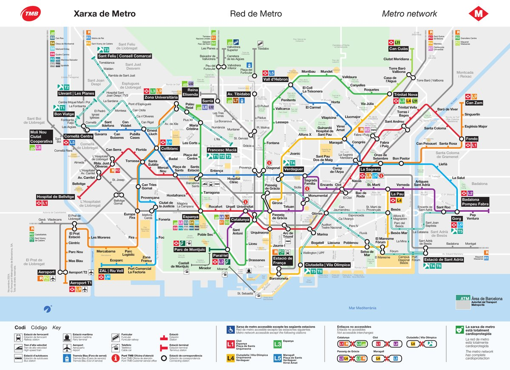
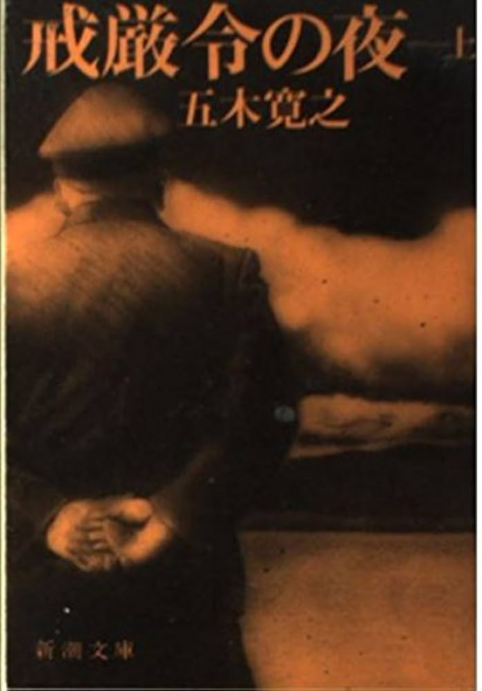

ロンドンからバルセロナへ
6月18日（木）カタルーニャはやはり一つの独立した「国」だ、と少なくとも生粋のカタルーニャ人なら、そう断言するに違いない。一つの独立した「言語」「文化」「歴史」それに「政治体制」——つまり独立した「国」としてのアイデンティティをもち、それを断固と主張することは、至難の業である。
カタルーニャの中心地はバルセロナである。従って、バルセロナの歴史はカタルーニャの歴史の縮図であり、それこそ惨憺たる失敗と雄々しき成功の歴史に他ならない。こうした歴史を動かすには、スペイン語でいう「パッシオナリーオ（Pasionario）」が必要なのだ——「情熱」そして「受難」、二重の意味において。
それにしても、バルセロナは明るい。地中海的な明るさというべきか。バルセロナは、再生、変身、無限の可能性の源泉である。
——川成洋『スペイン三都物語』（三修社）
バルセロナの由来——バルシーノからバルセロナへ
バルセロナ（Barcelona）という名の由来は、紀元前3世紀頃にさかのぼる。カルタゴの名将ハンニバルの父、ハミルカル・バルカ（Hamilcar Barca）が建設した「バルシーノ（Barcino）」がその起源とされる。カルタゴの名家「バルカ家」に因んだ名称は、ローマ時代に「バルキノナ（Barchinona）」へと変化し、中世を経て現在の「バルセロナ」に至った。
ローマ時代、この地は「Colonia Faventia Julia Augusta Pia Barcino」として整備され、神殿・公衆浴場・フォルム・防御壁を備えた植民市となった。現在のゴシック地区の路地はそのままローマ時代の街路網を受け継いでおり、タパスバーの足元2メートル下に2000年前のローマが眠っている。ゴシック地区の「プラカ・デル・レイ」に位置するMUHBA（バルセロナ市歴史博物館）では、ローマ時代の地下遺跡を実際に歩いて見学できる。EP06（6/21）のゴシック地区訪問時と組み合わせ可能なルートにある。
カタルーニャ近現代史——受難と復活の軌跡
- 1923ミゲル・プリモ・デ・リベラ軍事独裁——カタルーニャ弾圧。ナショナリズムが急進化。
- 1931スペイン第二共和政成立——ジャナラリタット（カタルーニャ自治政府）発足。1932年 カタルーニャ自治憲章承認。
- 1936スペイン内戦勃発（〜1939）——バルセロナでは「人民オリンピック」が開会直前に中止。反ファシズム勢力が市を掌握。
- 1939フランコ政権成立——カタルーニャ自治憲章廃止。カタルーニャ語の公的使用禁止。36年間の長夜。
- 1973三人のパブロが逝く——ピカソ（4/8・91歳）、ネルーダ（9/23・69歳）、カザルス（10/22・96歳）。三人ともファシズムに抵抗し続けた芸術家。フランコはまだ生きていた。
- 1975フランコ死去（11月）——民主化の夜明け。
- 1979カタルーニャ自治法制定——自治権正式回復。カタルーニャ語が公用語に復権。
- 1992バルセロナ・オリンピック——世界への再生宣言。都市インフラが劇的に整備される。
出典：立石博高『歴史のなかのカタルーニャ』・Wikipedia「カタルーニャの歴史」
6月18日（木） 到着行程
- 10:10パディントン発 ヒースロー・エクスプレス → LHR T3（約17分）
- 12:40BA480 離陸 LHR → BCN（Economy Plus · 預入荷物1個込み）
- 15:55バルセロナ空港 T2 着 — Hola Barcelona Travel Card（バウチャー番号 3050007742690）で地下鉄発券
- 16:30地下鉄移動 L9（Airport T2）→ Collblanc乗換 → L5 → Hospital Clinic 下車
- 17:00NH Barcelona Eixample チェックイン Valencia 105-107（予約番号 5052650657）
- 19:00Mercat del Ninot 徒歩圏内の地元市場で翌日の朝食・おやつ調達（21時まで）
| 住所 | Valencia, 105-107, Eixample, 08011, Barcelona |
| チェックイン（第1期） | 6/18（木）〜 6/20（フィゲラス日帰り後に戻り） |
| チェックアウト | 6/25（木） |
| 予約番号 | 5052650657 / 5052670514 |
| 料金 | 172.95€（6/18-20 の2泊）＋ 937.45€（6/20-25 の5泊） |


🚇 バルセロナ地下鉄（TMB）路線図 — クリックで拡大 ／ TMB 公式マップはこちら
碁盤目都市の美学——イルデフォンス・セルダの革命
NH Barcelona Eixample が位置するアシャンプラ（L'Eixample）は、1860年代に都市計画家 イルデフォンス・セルダが設計した近代バルセロナの拡張地区。 正八角形の角をカットした独特の交差点は、馬車（後に自動車）が楽に旋回できる実用的設計。 屋上から見下ろすと碁盤目状の街路が整然と広がり、各ブロックの中庭には緑地が配置される計画だった。 現在はカサ・バトリョ、カサ・ミラなどガウディの傑作が並ぶ 「不和のブロック（Manzana de la Discordia）」もこのエリアに位置する。
🎬 EP01 動画制作メモ
| ナレーション候補 | 「カタルーニャはやはり一つの独立した国だ」（川成洋）から入り、到着の映像につなぐ |
| 撮影ポイント | 空港到着ゲート・地下鉄乗り換え・アシャンプラの碁盤目街並み・ホテル周辺の夜景 |
| BGM候補 | フレディ・マーキュリー ＆ モンセラート・カヴァリエ「Barcelona」（1992年バルセロナ五輪テーマ） |
| 尺の目安 | 8〜12分（到着EP としてコンパクトに） |
| 公開日 | 2026年8月1日（土）19:00 JST — シリーズ開幕 |
三人のパブロ——1973年、ファシズムに抗った巨星たちが逝った年
1973年、世界は三人の「パブロ」を失った。画家パブロ・ピカソ（4月8日、91歳）、チェリスト・パブロ・カザルス（10月22日、96歳）、詩人パブロ・ネルーダ（9月23日、69歳）——スペインとラテンアメリカを代表するこの三人は、いずれもファシズムを憎み、その芸術で抵抗した。奇しくも同じ年に逝った。フランコはまだ生きていた。
ピカソはゲルニカ爆撃に怒り、反戦絵画を35日間で描き上げた。「スペインに民主主義が戻るまでゲルニカは祖国に渡さない」——その遺志は1981年に実現した。カザルスはフランコ政権を忌避し38年間、ファシスト政権下では一切の演奏を拒否した。1971年の国連では「鳥の歌」をチェロで奏で「カタルーニャは2,000年前から続く大国でした」と語った。ネルーダは選挙で選ばれたアジェンデ政権の駐仏大使として、1973年9月11日のチリ・クーデター直後に死去した。
五木寛之の小説『戒厳令の夜』は、架空の天才画家パブロ・ロペスの絵がナチスに奪われ博多で発見されるところから始まる。1970年代——学生運動、帝国主義への抵抗、そして薄氷の上のアジェンデの断末魔の叫び。Venceremos（我々は勝利する）という革命歌とともに。バルセロナはその時代を全身で生きた都市だった。

（五木寛之 著）
Eran Los Tres（三人がいた）— アルベルト・コルテスが三人のパブロに捧げた歌
アルゼンチンの詩人・歌手アルベルト・コルテスは、1973年にピカソ・カザルス・ネルーダが同年に相次いで逝った時、この歌を作った。チェロ（カザルス）、詩（ネルーダ）、絵（ピカソ）を手に——三人のパブロに捧げる鎮魂歌。「世界にパブロがいなくなった。美しいものは、彼らなしに、死に瀕している……いったいどうなるのか、どうなるのか」
Eran tres, eran tres, eran tres...
eran tres con palomas en las manos...
eran tres y los tres eran hermanos
de la luz, del amor y del saber.
Eran tres y se fueron los tres...
El primero detrás de algunos versos,
el segundo a pintar el universo
y tercero en mitad de su niñez...
Pablo gorrión, Pablo poeta y marinero,
Pablo arlequín, Pablo pintor, Pablo torero,
Pablo y "el cant dels ocells", Pablo maestro,
Pablos de todos, Pablos de nadie... Pablos nuestros.
Eran tres, eran tres, eran tres...
Tres senderos, tres huellas, tres caminos,
tres Quijotes venciendo a los molinos
con un cello, un poema y un pincel.
Eran tres y se fueron los tres...
nos quedamos sin Pablos en el mundo
y lo bello, sin ellos, moribundo...
¡qué va a ser de nosotros... qué va a ser!
▶ YouTube: Alberto Cortez — Eran Los Tres ／ TVE: LA IMAGEN DE TU VIDA — Tres Pablos (1973)


:quality(75)/media/files/imagen_radio/dsc00835_2.jpg)